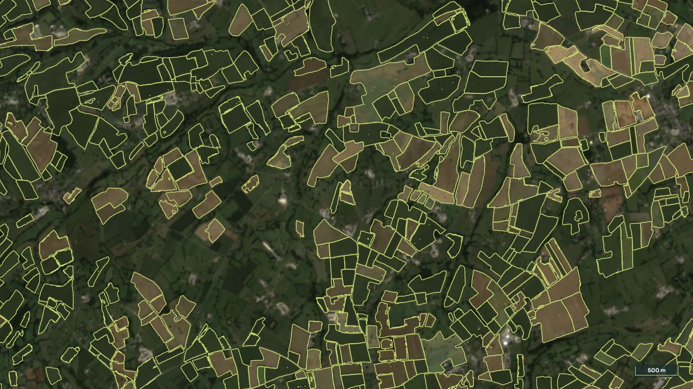
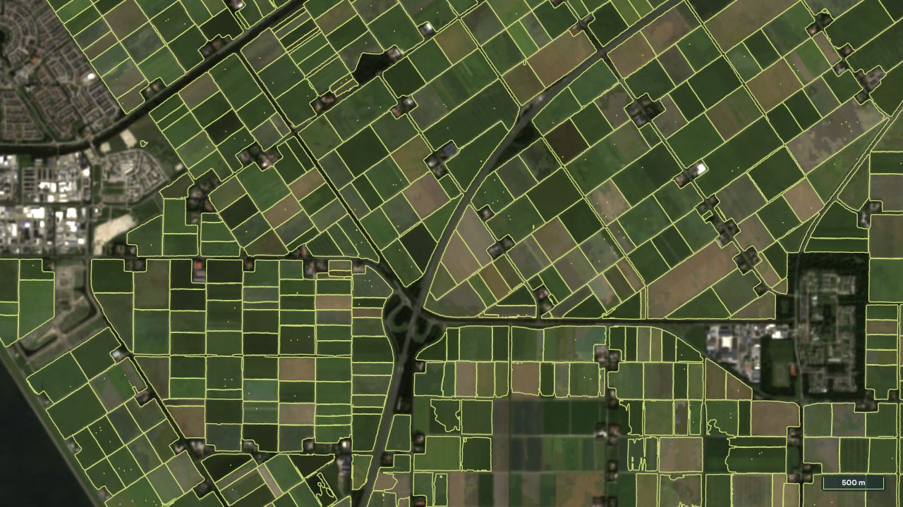
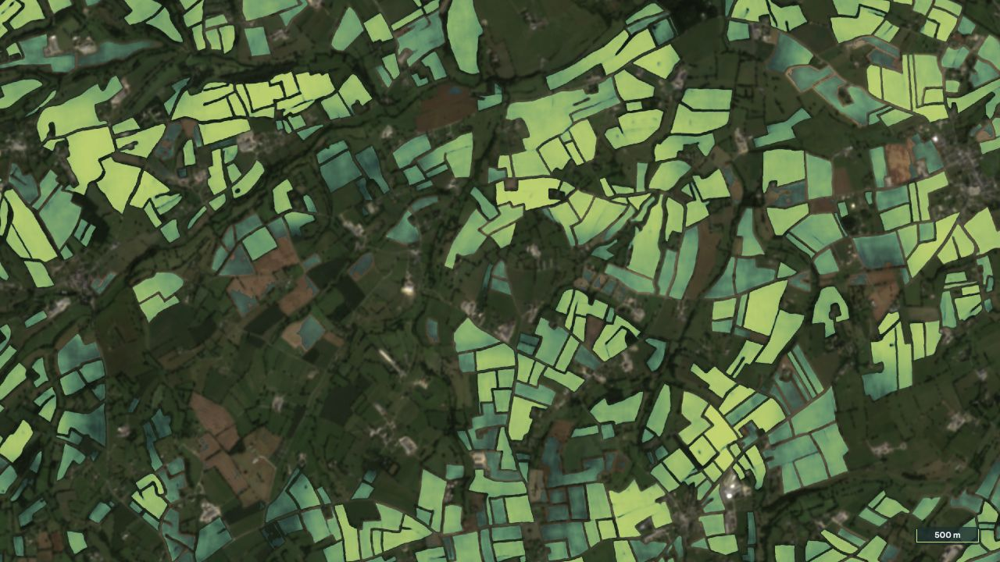
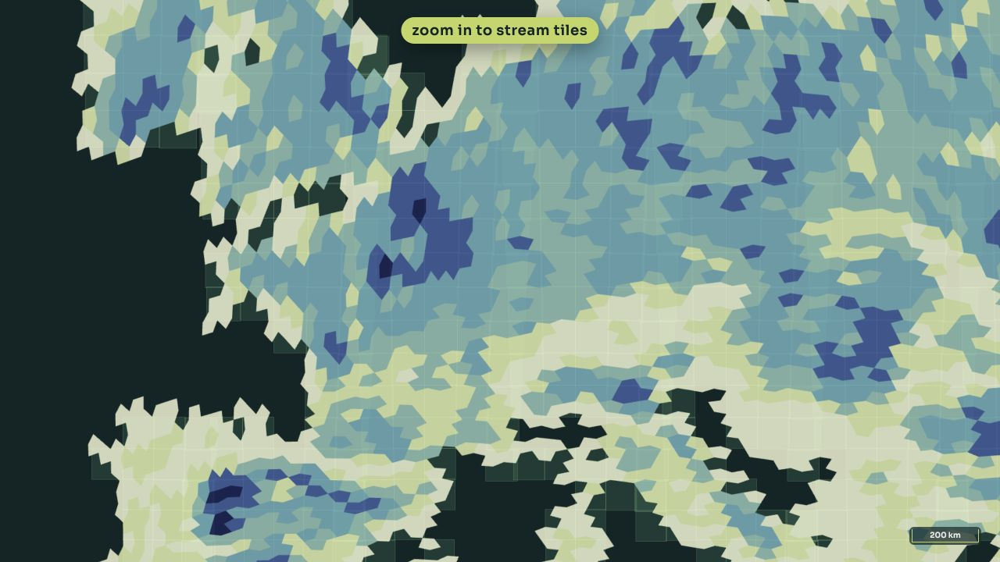
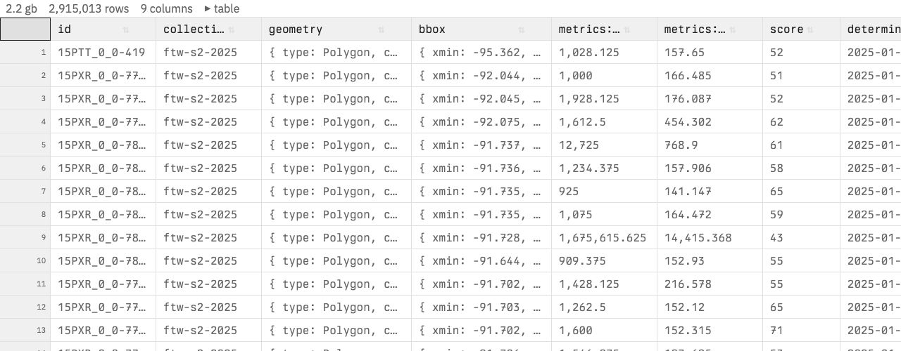
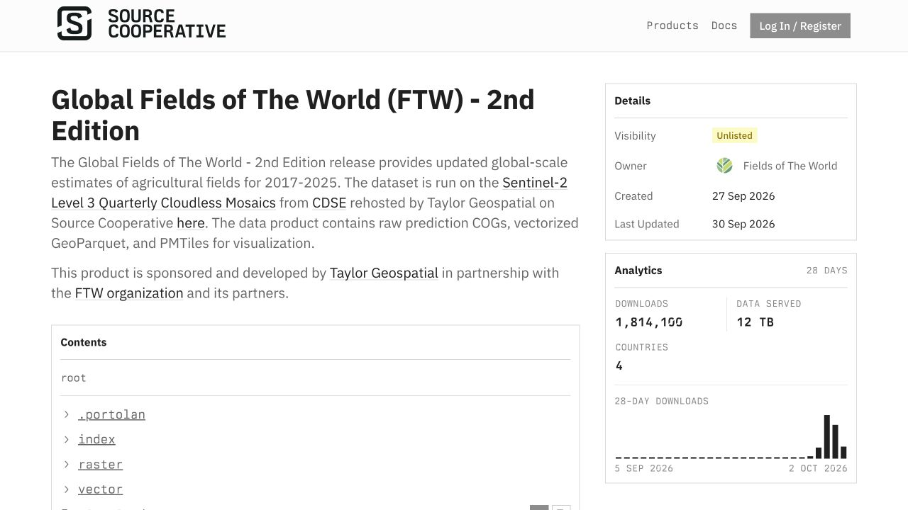
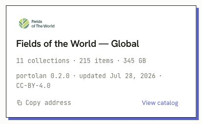

Features of The World
Extending the mapping work to roads,
buildings, solar panels, and trees.
CNG Forum 2026 · Snowbird, Utah
Isaac Corley
Director of AI/ML Research · Taylor Geospatial

For the Digital Public Good
Research partnerships.
Global maps people can reuse.
Shared ways to evaluate them.

Today’s main example
Global Fields of The World · 2nd edition
Extending the mapping work to roads,
buildings, solar panels, and trees.
Shared evaluation of model quality,
geographic generalization, and compute.
Accepted at NeurIPS 2026
Shared protocols and reproducible comparisons
for choosing models people can use.
Sneak peek · annual probabilities, 2017–2025 · field polygons
COGField and boundary probabilities

PMTilesRegional summaries and field polygons

GeoParquet · Geometry and per-field attributes

Open files over HTTPS · bring them into your own analysis
Hosts the data and documentation.

Catalog discovery through STAC
and cloud-optimized files.

Thank you to the Portolan community.
Preview on Source Cooperative · Portolan listing shown is the existing Global FTW catalog
Isaac Corley · isaac.corley@taylorgeospatial.org